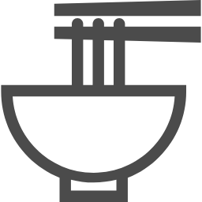

ある日、フレンチだったところがラーメン屋になってた！
東中野の大盛軒の先にあるラーメン屋

ある日見てたら突然やっていた...
食べログの評価高すぎ...
めっちゃ期待できる。
メニューだけでクッソ期待できるラーメン屋確定！
え？東中野のラーメン屋kinariってミシュラン掲載店だったの...?
「食べログラーメン百名店TOKYO 2017」や「ミシュランガイド東京2018」のビブグルマンなど、高く評価されている駒込の名店『麺処 kinari』が東中野に移転...って、つまり有名店だったと言うことですね
東中野ラーメン屋kinariのtwitter見つけた
何月何日はお休みですよーとか、 注文の多さから、なくなったメニューがありますよーとか, 本日、つけ麺は昼の部で売り切れで夜の部の提供がないですよーとか 本日から新メニューですーと かそう言うことがつぶやかれています
口コミ「待ちに待った人気のkinariが東中野に移転しました。話には聞いていたけれど想像以上に美味しいラーメンです
白醤油や潮や濃口醤油と色々とありましたが暑い日だったので煮干しイカスープを注文しました。
煮干しとイカのワタで濃いめに出汁をとったスープで想像通りパンチのあるスープでした。旨い！」
東中野のラーメン屋メンドコロKINARIの口コミ(rettyのTakkakiさん)抜粋
今回は特製濃口醤油を注文しました。
どんぶりの中のトッピング以外にもサイドメニューでで用意されているようです。
スープは醤油が強そうかなと思うのですがそれほど強くなく風味を存分に堪能できます。
とり主体のスープで、昆布や節で出汁をとり絶妙な仕上がりです。
甘さも調整されていて、バランスがいいスープになっています
とても後味がさっぱりです。
麺は、中太麺ですちぢれ麺ではなくて柔らかめのストレート麺。
トッピングの豚鶏鴨それぞれのチャーシューは低温調理。
鶏は厚めで柔らかく美味しい、豚は丁度良い塩梅、鴨は柔らかくジューシー。
三つ葉もついていて、さっぱりと飽きずに完食しました。
東中野ラーメンkinariの口コミ(食べログの安舌の遠吠えさんの口コミ)